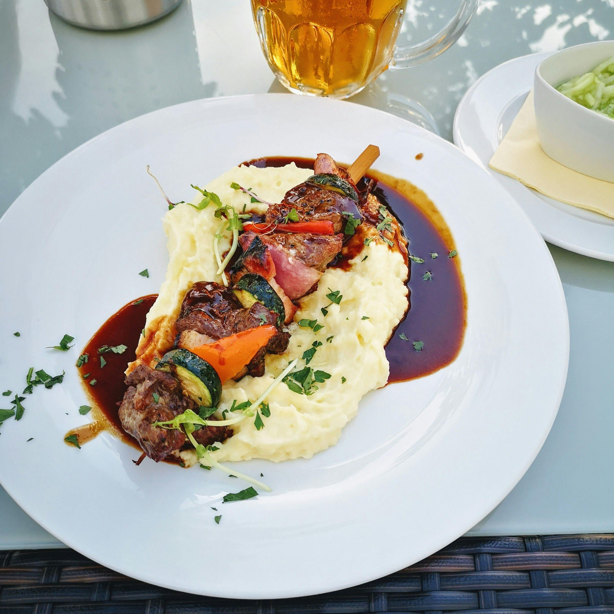

Grilled Salmon

Description
Everyone loves a rich and creamy mashed potatoes that just feels velvety and
smooth in the mouth. This recipe is simple yet delicious, all you need are
a few ingredients and your chef's hat. Let's make some world class mash patotoes
to make you shine at your next Thanksgiving.
Ingredients
- 3 large russet potatoes, peeled and cut in half lengthwise
- ½ cup whole milk
- ¼ cup butter
- salt and ground black pepper to taste
Steps
- Place potatoes in a large pot and cover with salted water. Bring to a boil.
Reduce heat to medium-low, cover, and simmer until tender, 20 to 25 minutes.
- Drain potatoes, then return to the pot. Turn heat to high and allow potatoes to
dry for about 30 seconds. Turn off heat.
- Mash potatoes with a potato masher twice around the pot, then add milk and butter.
Continue to mash until smooth and fluffy. Whisk in salt and black pepper until evenly
distributed, about 15 seconds.
Home